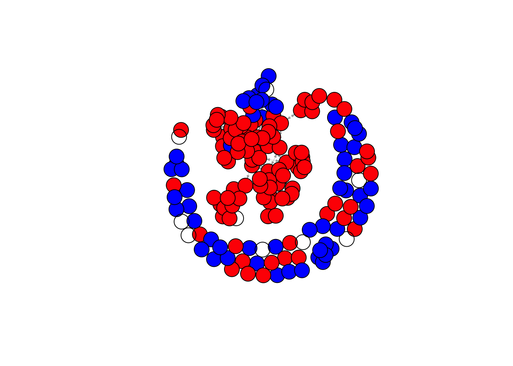
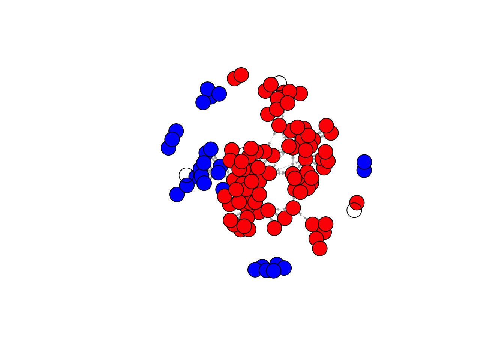

rm(list = ls())fpackage.check = function(packages) {
lapply(packages, FUN = function(x) {
if (!require(x, character.only = TRUE)) {
install.packages(x, dependencies = TRUE)
library(x, character.only = TRUE)
}
})
}
fsave = function(x, file = NULL, location = "./data/processed/") {
ifelse(!dir.exists("data"), dir.create("data"), FALSE)
ifelse(!dir.exists("data/processed"), dir.create("data/processed"), FALSE)
if (is.null(file))
file = deparse(substitute(x))
datename = substr(gsub("[:-]", "", Sys.time()), 1, 8)
totalname = paste(location, datename, file, ".rda", sep = "")
save(x, file = totalname) #need to fix if file is reloaded as input name, not as x.
}
fload = function(filename) {
load(filename)
get(ls()[ls() != "filename"])
}
fshowdf = function(x, ...) {
knitr::kable(x, digits = 2, "html", ...) |>
kableExtra::kable_styling(bootstrap_options = c("striped", "hover")) |>
kableExtra::scroll_box(width = "100%", height = "300px")
}fcolnet = function(data = scholars, university = c("RU", 'UU'), discipline = "Sociologie", waves = list(c(2015, 2018), c(2019, 2023), c(2024, 2025)), type = c("first")) {
university = paste0('(', paste0(university, collapse='|' ), ')')
discipline = paste0('(', paste0(discipline, collapse='|' ), ')')
# step 1
demographics = data$demographics
sample = which(
(str_detect(demographics$universiteit.22, university)
| str_detect(demographics$universiteit.24, university)
| str_detect(demographics$universiteit.25, university)
) & (
str_detect(demographics$discipline.22, discipline)
| str_detect(demographics$discipline.24, discipline)
| str_detect(demographics$discipline.25, discipline)
) |> replace_na(FALSE))
demographics_soc = demographics[sample, ] |> drop_na(id)
# step 2
ids = demographics_soc$id |> unique()
scholars_sel = list()
for (id_ in ids){
scholars_sel[[id_]] = bind_rows(scholars$works) |>
filter(author_id == id_)
}
scholars_sel = bind_rows(scholars$works)
nwaves = length(waves)
nets = array(0, dim = c(nwaves, length(ids), length(ids)), dimnames = list(wave = 1:nwaves, ids,
ids))
dimnames(nets)
# step 3
df_works = tibble(
works_id = scholars_sel$id,
works_author = scholars_sel$authorships,
works_year = scholars_sel$publication_year
)
df_works = df_works[!duplicated(df_works), ]
# step 4
if (type == "first") {
for (j in 1:length(waves)) {
df_works_w = df_works[df_works$works_year >= waves[[j]][1] & df_works$works_year <= waves[[j]][2],
]
for (i in 1:nrow(df_works_w)) {
ego = df_works_w$works_author[i][[1]]$id[1]
alters = df_works_w$works_author[i][[1]]$id[-1]
if (sum(ids %in% ego) > 0 & sum(ids %in% alters) > 0) {
nets[j, which(ids %in% ego), which(ids %in% alters)] = 1
}
}
}
}
if (type == "last") {
for (j in 1:length(waves)) {
df_works_w = df_works[df_works$works_year >= waves[[j]][1] & df_works$works_year <= waves[[j]][2],
]
for (i in 1:nrow(df_works_w)) {
ego = rev(df_works_w$works_author[i][[1]]$id[1])
alters = rev(df_works_w$works_author[i][[1]]$id[-1])
if (sum(ids %in% ego) > 0 & sum(ids %in% alters) > 0) {
nets[j, which(ids %in% ego), which(ids %in% alters)] = 1
}
}
}
}
if (type == "all") {
for (j in 1:length(waves)) {
df_works_w = df_works[df_works$works_year >= waves[[j]][1] & df_works$works_year <= waves[[j]][2],
]
for (i in 1:nrow(df_works_w)) {
egos = df_works_w$works_author[i][[1]]$id
if (sum(ids %in% egos) > 0) {
nets[j, which(ids %in% egos), which(ids %in% egos)] = 1
}
}
diag(nets[j,,]) = 0
}
}
output = list()
output$data = demographics_soc
output$nets = nets
return(output)
}packages = c(
"RSiena", "tidyverse",
'dplyr', 'stringr' # these packages were added to make the code run
)
fpackage.check(packages)## [[1]]
## NULL
##
## [[2]]
## NULL
##
## [[3]]
## NULL
##
## [[4]]
## NULLlibrary(RSiena)
library(tidyverse)
library(dplyr)
library(stringr)
scholars = fload('data/processed/20251017scholars.Rda')
scholars$demographics = scholars$demographics |>
mutate(
universiteit.22 = str_replace(universiteit.22, 'RUG', 'RvG'),
universiteit.24 = str_replace(universiteit.24, 'RUG', 'RvG'),
universiteit.25 = str_replace(universiteit.25, 'RUG', 'RvG'),
)test = fcolnet(scholars, university = c('RU', 'UU'))
df_ego = bind_rows(test$data)wave1 = test$nets[1,,]
wave2 = test$nets[2,,]
wave3 = test$nets[3,,]
nets = array(
data = c(wave1, wave2, wave3),
dim = c(dim(wave2), 2)
)
net = sienaDependent(nets)df_ego = df_ego |>
mutate(
funcs = case_when(
functie.22 == "Full Professor" ~ 1,
functie.24 == "Full Professor" ~ 1,
functie.25 == "Full Professor" ~ 1,
.default = 0
)
)
funcs = coCovar(df_ego$funcs)mydata = sienaDataCreate(net, funcs)
myeff = getEffects(mydata)
myeff = includeEffects(myeff, isolateNet, inPop.c, outAct)## effectNumber effectName shortName include fix test initialValue parm
## 1 81 indegree-popularity (centrd) inPop.c TRUE FALSE FALSE 0 0
## 2 106 outdegree - activity outAct TRUE FALSE FALSE 0 0
## 3 149 network-isolate isolateNet TRUE FALSE FALSE 0 0myAlgorithm = sienaAlgorithmCreate(
projname = "soc_init")## If you use this algorithm object, siena07 will create/use an output file soc_init.txt .ansM1 = siena07(
myAlgorithm,
data = mydata,
effects = myeff,
returnDeps = TRUE
)## tcltk DLL is linked to '/opt/X11/lib/libX11.6.dylib'## Package tcltk not available, forcing use of batch mode##
## Start phase 0
## theta: -1.51 0.00 0.00 0.00 0.00
##
## Start phase 1
## Phase 1 Iteration 1 Progress: 0%
## Phase 1 Iteration 2 Progress: 0%
## Phase 1 Iteration 3 Progress: 0%
## Phase 1 Iteration 4 Progress: 0%
## Phase 1 Iteration 5 Progress: 0%
## Phase 1 Iteration 10 Progress: 0%
## Phase 1 Iteration 15 Progress: 1%
## Phase 1 Iteration 20 Progress: 1%
## Phase 1 Iteration 25 Progress: 1%
## Phase 1 Iteration 30 Progress: 1%
## Phase 1 Iteration 35 Progress: 1%
## Phase 1 Iteration 40 Progress: 1%
## Phase 1 Iteration 45 Progress: 2%
## Phase 1 Iteration 50 Progress: 2%
## theta: -1.9757 0.6553 0.1490 -0.0155 0.2093
##
## Start phase 2.1
## Phase 2 Subphase 1 Iteration 1 Progress: 10%
## Phase 2 Subphase 1 Iteration 2 Progress: 11%
## theta -2.2436 1.3679 0.2749 -0.0446 1.0089
## ac 2.09 1.12 1.13 -0.52 1.71
## Phase 2 Subphase 1 Iteration 3 Progress: 11%
## Phase 2 Subphase 1 Iteration 4 Progress: 11%
## theta -2.5129 3.2013 0.4039 -0.0782 3.0718
## ac 2.070 1.269 1.478 -0.218 1.349
## Phase 2 Subphase 1 Iteration 5 Progress: 11%
## Phase 2 Subphase 1 Iteration 6 Progress: 11%
## theta -2.3070 2.7051 0.3842 -0.0984 4.3854
## ac 0.861 1.560 1.477 -0.273 1.314
## Phase 2 Subphase 1 Iteration 7 Progress: 11%
## Phase 2 Subphase 1 Iteration 8 Progress: 11%
## theta -1.814 2.465 0.355 -0.139 5.276
## ac 0.937 0.917 1.427 -0.403 1.180
## Phase 2 Subphase 1 Iteration 9 Progress: 11%
## Phase 2 Subphase 1 Iteration 10 Progress: 11%
## theta -1.427 1.697 0.283 -0.159 5.646
## ac 0.860 0.983 1.284 -0.360 1.163
## theta 6.387 2.277 0.335 -1.837 12.241
## ac 0.1148 -0.0168 -0.0638 0.1373 0.1622
## theta: 6.387 2.277 0.335 -1.837 12.241
##
## Start phase 2.2
## Phase 2 Subphase 2 Iteration 1 Progress: 19%
## Phase 2 Subphase 2 Iteration 2 Progress: 19%
## Phase 2 Subphase 2 Iteration 3 Progress: 19%
## Phase 2 Subphase 2 Iteration 4 Progress: 19%
## Phase 2 Subphase 2 Iteration 5 Progress: 19%
## Phase 2 Subphase 2 Iteration 6 Progress: 19%
## Phase 2 Subphase 2 Iteration 7 Progress: 19%
## Phase 2 Subphase 2 Iteration 8 Progress: 19%
## Phase 2 Subphase 2 Iteration 9 Progress: 19%
## Phase 2 Subphase 2 Iteration 10 Progress: 19%
## theta 6.38 2.33 0.32 -1.84 12.13
## ac -0.0170 0.0847 0.0275 0.0706 -0.0702
## theta: 6.38 2.33 0.32 -1.84 12.13
##
## Start phase 2.3
## Phase 2 Subphase 3 Iteration 1 Progress: 28%
## Phase 2 Subphase 3 Iteration 2 Progress: 28%
## Phase 2 Subphase 3 Iteration 3 Progress: 28%
## Phase 2 Subphase 3 Iteration 4 Progress: 28%
## Phase 2 Subphase 3 Iteration 5 Progress: 28%
## Phase 2 Subphase 3 Iteration 6 Progress: 28%
## Phase 2 Subphase 3 Iteration 7 Progress: 28%
## Phase 2 Subphase 3 Iteration 8 Progress: 28%
## Phase 2 Subphase 3 Iteration 9 Progress: 28%
## Phase 2 Subphase 3 Iteration 10 Progress: 28%
## theta 5.820 2.338 0.328 -1.749 11.492
## ac -0.0954 0.0310 0.0883 -0.0974 0.0209
## theta: 5.820 2.338 0.328 -1.749 11.492
##
## Start phase 2.4
## Phase 2 Subphase 4 Iteration 1 Progress: 42%
## Phase 2 Subphase 4 Iteration 2 Progress: 42%
## Phase 2 Subphase 4 Iteration 3 Progress: 42%
## Phase 2 Subphase 4 Iteration 4 Progress: 42%
## Phase 2 Subphase 4 Iteration 5 Progress: 42%
## Phase 2 Subphase 4 Iteration 6 Progress: 42%
## Phase 2 Subphase 4 Iteration 7 Progress: 42%
## Phase 2 Subphase 4 Iteration 8 Progress: 42%
## Phase 2 Subphase 4 Iteration 9 Progress: 42%
## Phase 2 Subphase 4 Iteration 10 Progress: 42%
## theta 5.358 2.344 0.329 -1.633 11.044
## ac -0.1288 0.1328 0.1948 -0.1036 0.0676
## theta: 5.358 2.344 0.329 -1.633 11.044
##
## Start phase 3
## Phase 3 Iteration 500 Progress 83%
## Phase 3 Iteration 1000 Progress 100%ansM1## Estimates, standard errors and convergence t-ratios
##
## Estimate Standard Convergence
## Error t-ratio
##
## Rate parameters:
## 0 Rate parameter 2.6371 ( 0.4106 )
##
## Other parameters:
## 1. eval outdegree (density) 5.3579 ( 7.7620 ) 0.1640
## 2. eval reciprocity 2.3443 ( 0.4544 ) -0.1716
## 3. eval indegree-popularity (centrd) 0.3294 ( 0.0590 ) 0.3952
## 4. eval outdegree - activity -1.6331 ( 1.8741 ) -0.0834
## 5. eval network-isolate 11.0436 ( 6.9100 ) -0.2147
##
## Overall maximum convergence ratio: 0.4220
##
##
## Total of 2620 iteration steps.test <- fcolnet(data = scholars,
university = c("UU", 'RU'),
discipline = c("Sociologie", "Politicologie"),
waves = list(c(2015, 2018), c(2019, 2025)),
type = c("all"))
test_w2 <- igraph::graph_from_adjacency_matrix(
test$nets[2,,], #now, I take the second wave
mode = c("directed"),
weighted = NULL,
diag = FALSE,
add.colnames = NULL,
)
#Let us find ego characteristics.
#first fish out the data
df <- test$data
#same complicated structure as 'scholars' thus first make a dataframe from the list in which all info was saved.
# df_ego <- do.call(rbind.data.frame, df$demographics)
df_ego = df
plot(test_w2,
vertex.color = ifelse(df_ego$discipline.24 == "Sociologie", "red", "blue"), #now, I can use actor attributes for plotting.
vertex.label = NA,
edge.width = 0.2,
edge.arrow.size =0.2)
noisolates = rowSums(test$nets[2,,]) > 0
netnew = test$nets[2,noisolates,noisolates]
dfnew = df_ego[noisolates, ]
test_w2_new <- igraph::graph_from_adjacency_matrix(
netnew, #now, I take the second wave
mode = c("directed"),
weighted = NULL,
diag = FALSE,
add.colnames = NULL,
)
plot(test_w2_new,
vertex.color = ifelse(dfnew$discipline.24 == "Sociologie", "red", "blue"), #now, I can use actor attributes for plotting.
vertex.label = NA,
node.size = 0.2,
edge.width = 0.2,
edge.arrow.size =0.2)